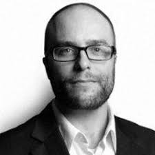

More Details
ABOUT
FreeCodeCamp is a non-profit organization that consists of an interactive learning web platform, an online community forum, chat rooms, online publications and local organizations that intend to make learning web development accessible to anyone. Beginning with tutorials that introduce students to HTML, CSS and JavaScript, students progress to project assignments that they must complete either alone or in pairs. Upon completion of all project tasks, students are partnered with other nonprofits to build web applications, giving the students practical development experience.
HISTORY
 freeCodeCamp was launched in October 2014 and incorporated as Free Code Camp, Inc. The founder, Quincy Larson , is a software developer who took up programming after graduate school and created freeCodeCamp as a way to streamline a student's progress from beginner to being job-ready.